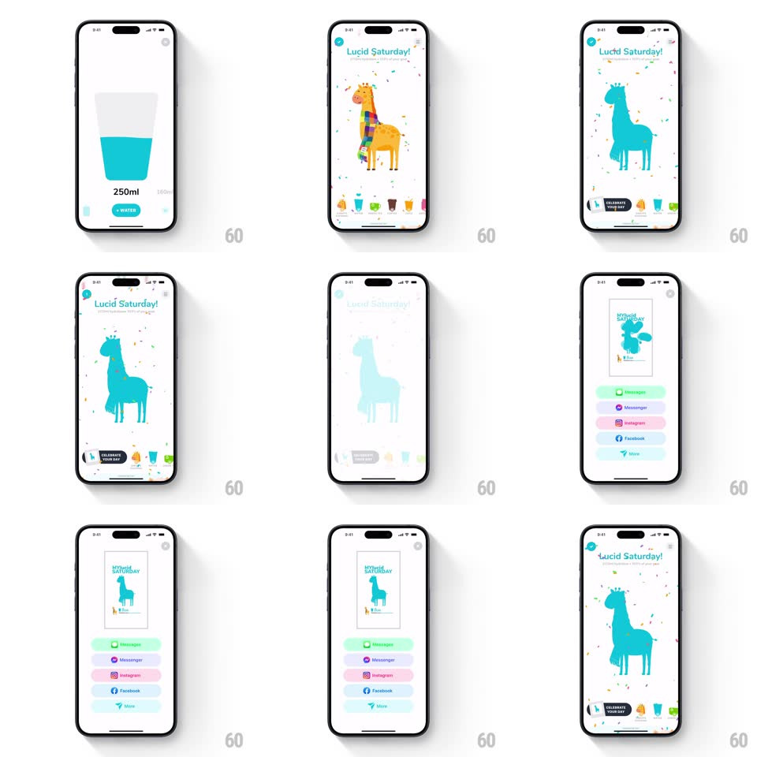

Media
Frame-by-frame

Rebuild this interaction 1:1: Waterllama's goal-finished celebration - confetti rains as the llama mascot reveals rainbow-striped leggings, then a share card and a staggered share sheet follow.

Rebuild this interaction 1:1: Waterllama's goal-finished celebration - confetti rains as the llama mascot reveals rainbow-striped leggings, then a share card and a staggered share sheet follow.
## Integration
Integration: stack-agnostic spec - springs given as stiffness/damping, timed motions as duration + curve; map every value to your framework and animation library of choice.
## Scene
Home with the full llama (teal body, 1860ml) transitions into the celebration screen: "Lucid Saturday!" header, confetti falling over the mascot, and a black "CELEBRATE YOUR DAY" pill. Mid-celebration the llama's legs morph to reveal rainbow-striped socks. A share card ("MY lucid SATURDAY", mascot, 2110ml badge) and a share sheet (iMessage, Messenger, Instagram, Facebook, More) complete the flow.
## Motion spec
Pattern: confetti + mascot morph + staggered share sheet.
- Trigger: the header ("Lucid Saturday!") drops in (translateY -20px + fade, spring ~360/22) as confetti begins - 80-120 pieces spawning above the viewport, falling with per-piece rotation, horizontal sway (sine, +-20px), and varied fall speeds (2.5-4.5s to bottom), in the app's teal/yellow/pink palette.
- The mascot morph: the llama's plain legs wiggle (rotate +-3deg, 2 cycles, 300ms) then the rainbow stripes wipe upward onto each leg (250ms per leg, staggered 80ms hoof-up) - a reveal, not a swap; the llama does a happy hop once (translateY -14px, spring ~340/16) as the last stripe lands.
- The "CELEBRATE YOUR DAY" pill slides up (spring ~380/24) 200ms after the header.
- Share card: the scene compresses into a card (bounds spring ~340/22, 400ms) with the big title typing-scale pop (scale 0.9 to 1, spring ~400/20).
- Share sheet: slides up (spring ~360/28), its five rows staggering in bottom-up (translateY 20px + fade, 220ms each, 60ms apart), each row a soft pastel pill with its service icon.
## Calibration
- Confetti persists at low density behind everything until the sheet is dismissed - it's a celebration state, not a one-shot burst.
- The rainbow leggings are THE payoff; keep every other element quiet while the morph plays.
## Reduced motion
Confetti becomes 12 static pieces; legs swap without wiggle; sheet fades in.
## Don't miss
- The llama faces away (tail toward viewer) so the leggings read clearly - keep the pose.
- Share rows are pastels (mint, lavender, pink, sky, pale teal), not brand-saturated colors.